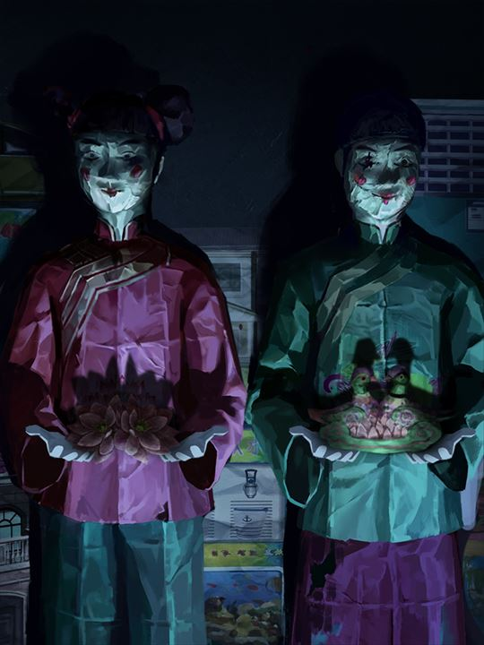
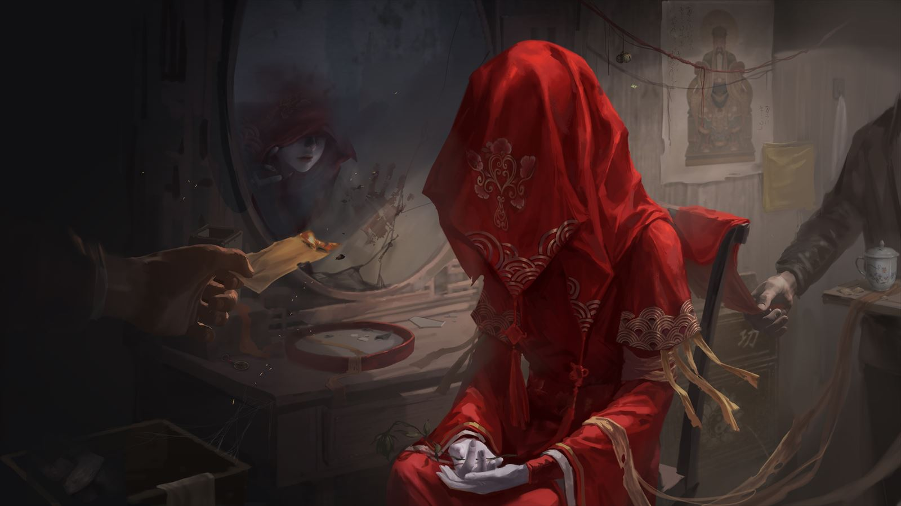
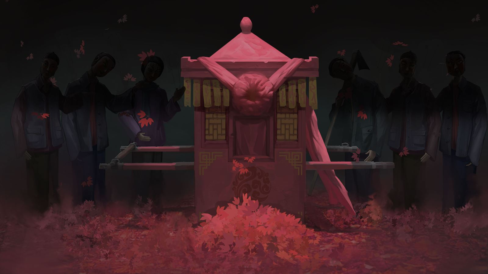
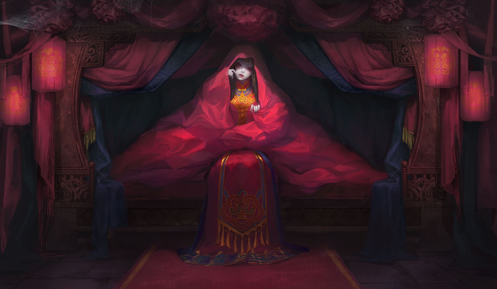
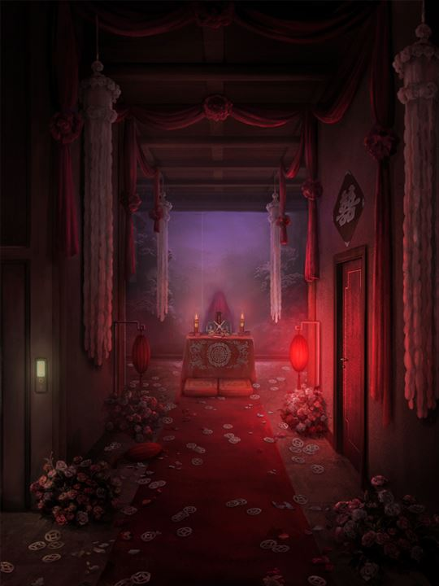
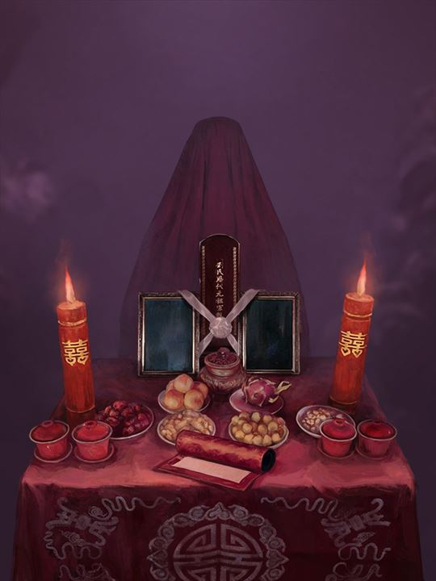
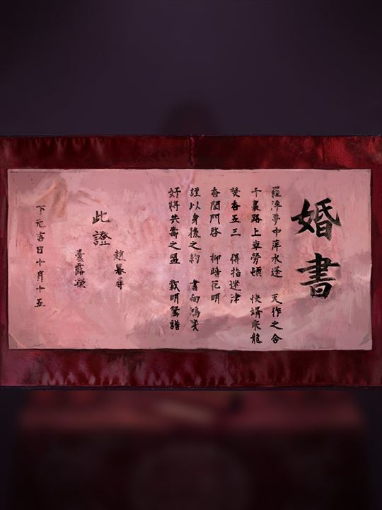

红 纸 落 名 · 命 数 已 定
新娘
红线相牵，照签行事

壹 · 今 夜 之 事
- 01
找到新郎并交换线索
- 02
与新郎共同完成指定动作
赏
凭身份卡领取奖励
玩家端界面 · 三版原型
这三版做的是同一件事：玩家用微信扫码之后，手机上看到的那几屏 （输入组局码 → 等待开轮 → 摇签 → 抽出身份卡 → 本轮签尽）。 区别只有一个：这批《纸嫁衣》素材怎么用、整体气质往哪边走。 功能完全一样，选的是"长相"。
最克制、仪式感最强。整屏近黑，让透明的红色剪纸人和角色立绘当主角。
红 纸 落 名 · 命 数 已 定
红线相牵，照签行事
找到新郎并交换线索
与新郎共同完成指定动作
凭身份卡领取奖励
每一屏都是一张全屏剧照（轿子 / 街景 / 对镜 / 洞房 / 绣鸳鸯 / 下楼），最有故事感和电影感。
红 纸 落 名 · 命 数 已 定
红线相牵，照签行事
找到新郎并交换线索
与新郎共同完成指定动作
凭身份卡领取奖励
唯一的浅色版：宣纸米白 + 朱砂红，红剪纸放在白纸上，白天户外也看得清。
红 纸 落 名 · 命 数 已 定
红线相牵，照签行事
找到新郎并交换线索
与新郎共同完成指定动作
凭身份卡领取奖励
你提到后台也要尽量用上素材。下面是一版示意（先看方向，不是可点的原型）： 侧栏顶部换字标、组局码用红印章式样、顶部条带用剧照、身份内容里每个身份配一张立绘缩略图。
LIVE CEREMONY CONSOLE


身份内容里每个身份配立绘缩略图，改任务时一眼知道在改谁
我最初只能用文件名猜用途，后来能读图了，逐张核对后发现三处必须纠正，三版原型已按核对结果重做：
7.jpg / 8.jpg 不是剧照，是官方设定稿（"人设草图·纸媒婆""物品设计稿·纸花轿"，
图上带 PAPER BRIDE 3 的 logo 和中英文说明）→ 已从素材里删除。因此浅色版本改为不用照片背景。男主.png / 女主.png 不是新郎新娘，是穿格子衬衫和牛仔裙的现代装主角 →
身份卡改用剪纸双人图切出的新娘/新郎两半（各带「囍」的一半，两张卡合起来正好是完整囍字）。
另外：老太婆 / 老头子 是"红头巾棉袄老太太 + 中山装老头"，非常贴合村民；
八张 shot-* 全是高质量的竖版场景（门上的囍、河灯、姻缘牌、纸人、红绸廊道、拜堂供桌、婚书、旧报纸）。
角色立绘是不透明白底（带 alpha 通道但没用上），所以放在米色纸卡上用
mix-blend-mode: multiply 让白底融进纸色，无需抠图。
scene-street.jpg（街景新娘）、scene-downstairs.jpg（下楼）、
scene-courtyard.jpg、scene-2.jpg、scene-poster.jpg、
shot-27（民国旧报纸）、char-groom/char-bride（现代装主角）——
这些还没逐张确认或还没找到合适位置，你要指定"哪张放哪屏"我直接接。









